Pedals
Tuner
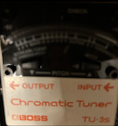This tuner is really compact so it leaves space for more pedals and it is always on.
Drum pedals BeatBuddy and SDRUM
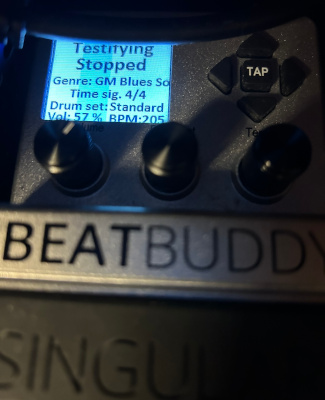 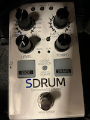Octave Pedals Pog and /boss OC5
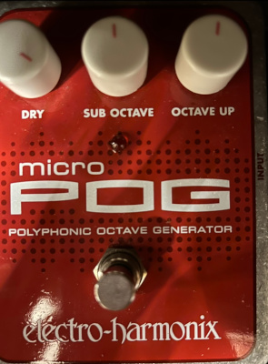
Dirty Robot
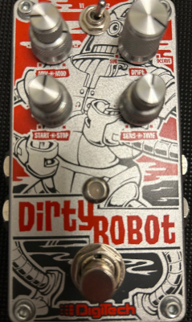Bad Stone Phase Shifter
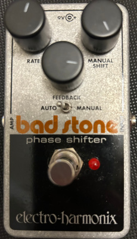Bass Envelope Filter
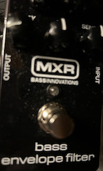Compressor
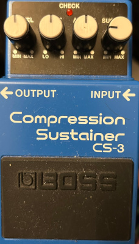Pitch Shifter Brainwaves
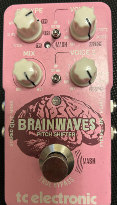Polara reverb pedal
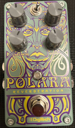Bass Soul Food
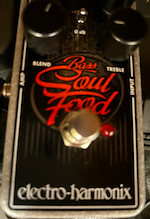